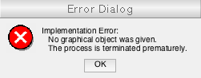

Contents
function [ ] = exportAvi( object, path, framerate, quality )
%EXPORTAVI Summary of this function goes here % Detailed explanation goes here
Defining constants
Persistent: persistent constants are used so that once a place is allocated to these constants on the memory, it is held for as long as the application is open. It differs to global in that these constants are not available outside this function. However, it optimises the application in that it eliminates the need for the reintroduction of these constants every time the function in invoked. It also makes the use of RAM more efficient by ensuring consecutive allocations where possible. These variables are additionally useful if the code is converted into C.
AVI encoding profiles (as described in MATLAB® documentations:
| Profile | Description |
|---|---|
| Archival | Motion JPEG 2000 file with lossless compression. |
| Motion JPEG AVI | AVI file using Motion JPEG encoding. |
| Motion JPEG 2000 | Motion JPEG 2000 file. |
| MPEG4 | MPEG-4 file with H.264 encoding (systems with Windows 7 or later, or Mac OS X 10.7 and later) - .mp4 or .m4v |
| Uncompressed AVI | Uncompressed AVI file with RGB24 video. |
| Indexed AVI | Uncompressed AVI file with indexed video. |
| Grayscale AVI | Uncompressed AVI file with grayscale video. |
Details of each consntant is given in Initiation of constants.
% AVI encoding profiles (as described in MATLAB(R) documentations: % +------------------+----------------------------------------------------------+ % | Profile | Description | % +------------------+----------------------------------------------------------+ % | Archival | Motion JPEG 2000 file with lossless compression. | % +------------------+----------------------------------------------------------+ % | Motion JPEG AVI | AVI file using Motion JPEG encoding. | % +------------------+----------------------------------------------------------+ % | Motion JPEG 2000 | Motion JPEG 2000 file. | % +------------------+----------------------------------------------------------+ % | MPEG4 | MPEG-4 file with H.264 encoding (systems withWindows 7 | % | | or later, or Mac OS X 10.7 and later) - .mp4 or .m4v | % +------------------+----------------------------------------------------------+ % | Uncompressed AVI | Uncompressed AVI file with RGB24 video. | % +------------------+----------------------------------------------------------+ % | Indexed AVI | Uncompressed AVI file with indexed video. | % +------------------+----------------------------------------------------------+ % | Grayscale AVI | Uncompressed AVI file with grayscale video. | % +------------------+----------------------------------------------------------+ persistent DEFAULT_RATE; persistent DEFAULT_QUALITY; persistent AVI_PROFILE; persistent ASPECT_RATIO; persistent AVI_QUALITY; % Initiation of constants. if ~isempty(DEFAULT_RATE) || ... ~isempty(DEFAULT_QUALITY) || ... ~isempty(AVI_PROFILE) DEFAULT_RATE = uint8(24); % 24 fps; HD standard. DEFAULT_QUALITY = uint16(720); % HD 720p. AVI_PROFILE = 'Uncompressed AVI'; % Standard for RGB24 video. ASPECT_RATIO = [16 9]; % Standard HD video aspect. AVI_QUALITY = uint8(100); % Comparative quality of images in %. end
Verification of parameters.
Checking the existence of essential parameters.
% A graphical object given? if ~exist('object', 'var') % Apprently not! Generate an error message. errordlg(sprintf( ... ['Implementation Error:\n' ... ' No graphical object was given.\n'... ' The process is terminated prematurely.'])) % Nothing else to do here until the user learns how to use the % application. So function is closed. return % Function terminated. % Is the path to save the file given? if not, ask the user for it. elseif ~exist('path', 'var') % Ask the user for a file name. [avi_name, avi_path] = uiputfile('*.avi', ... 'Save video file as'); % Cancelled? if avi_name == 0 || avi_path == 0 return % Cancelled by user. end % Create a single string of the absolute path for saving the % final output file. path = strcat(avi_path, avi_name); % Testing the viability of the path. % % For instance, does the user have sufficient permission to write % in this directory? or is the disk healthy? try % Create and open a file in the given path. test_file = fopen(path, 'w'); % Write into the file. fprintf(test_file,'testing the file.'); % Close the file object. fclose(test_file); % Does what it says! Deletes the test file. delete(path) catch exception % There has been a problem with writing files in the given % path; most likely something to do with ownership or % permissions - but you never know! So the actual message % generated by MATLAB(R) is displayed. errordlg(sprintf(['I/O Error:\n' ... ' %s \n' ... ' The process is terminated prematurely.'],... exception.message), exception.identifier) % Nothing else to do here until I/O problem is solved. return % Function terminated. end % try (file path test) end % if (Essential parameters)
Now checking the status non-essential paramenters.
Note: str2double is faster than str2num. The former throws an error if the variable passed is a mix of numbers and characters. The latter on the other hand, checks (through iteration) for the existence of non-numeric characters, and if any exists, it returns an empty array.
try % Check if |framerate| is implemented. if ~exist('framerate', 'var') % |framerate| not implemented. So the default is invoked. framerate = DEFAULT_RATE; % Check if the |framerate| given is a string object. elseif isa(framerate, 'char') % Framerate is given as a string object. It is converted into % double. For more see section intro. tmp = str2double(framerate); framerate = uint8(tmp); % If none of the above apply = The user has done everything right: else % Convert |framerate| into an unsigned 8-bit integer. framerate = uint8(framerate); end % if (framerate) % Check if |quality| is implemented. if ~exist('quality', 'var') % |quality| not implemented. So the default is invoked. quality = DEFAULT_QUALITY; % Check if |quality| is given as a string object. elseif isa(quality, 'char') % Framerate is given as a string object. It is converted into % double. For more see section intro. tmp = str2double(quality); quality = uint16(tmp); % If none of the above apply = The user has done everything right: else % Convert |quality| into an unsigned 16-bit integer. quality = uint16(quality); end % if (quality) catch exception % Most likely induced by passing a mixture of strings and numbers % to |str2double| - but you never know! So the actual message % generated by MATLAB(R) is displayed. errordlg(sprintf(['Input Error:\n' ... ' %s \n' ... ' The process is terminated prematurely.'],... exception.message), exception.identifier) % Nothing else to do here until the user learns how to use the % application. So function is closed. return % Function terminated. end % try (non-essential vars) try avi_object = VideoWriter(path, AVI_PROFILE); avi_object.FrameRate = framerate; aviobj.Quality = AVI_QUALITY; vid_length = Nfile / str2num(answer{1}); vid_FPS = str2num(answer{1}); vid_qual = str2num(answer{2}); vid_scf = str2num(answer{3}); catch merr errordlg(sprintf( ... 'Please follow previous steps in proper order!\n%s', ... merr.message), merr.identifier) end if Nfile == 0 errordlg('No images selected') else try open(aviobj) wb = waitbar(0, 'Please wait...'); for i = 1:Nfile img = imread(strcat(file_path, file_name{i})); if vid_scf ~= 1 img = imresize(img, vid_scf); end writeVideo(aviobj, img); % Preview image if mod(i, round(Nfile/10)) == 1 imshow(img) title(sprintf('Preview image %d/%d', i, Nfile)) uistack(wb, 'top') end waitbar(i/Nfile, wb); end delete(wb) close(aviobj); catch merr errordlg(sprintf( ... 'Please follow previous steps in proper order!\n%s', ... merr.message), merr.identifier) end end
end